import socket
IP = '0.0.0.0'
PORT = 0
BUFFER_SIZE = 1024
s = socket.socket(socket.AF_INET, socket.SOCK_STREAM)
s.bind((IP,PORT))
s.listen(1)
cur_port = s.getsockname()[1]
print(f"server on: {IP}:{cur_port}")
try:
while True:
conn, addr = s.accept()
print(f"client addr: {str(addr)}")
print(f"Connection address: {format(addr)}")
to_client = "SALVE!"
data = conn.recv(BUFFER_SIZE)
print(f"received data: {data.decode("utf-8")}")
conn.send(to_client.encode("uft-8"))
conn.close()
except:
s.close()10 Programmazione su Rete
10.1 Internet
Rete di estensione mondiale basata sul protocollo TCP/IP
- Progenitrice: ARPANET, 1969 finanziata dall’ARPA (Advanced Research Project Agency), agenzia del Dipartimento della Difesa USA.
- In origine create per esigenze militari e per connettere università e centri di ricerca.
Oggi costituisce uno strumento per:
- scambiare e cercare informazioni
- sviluppare sistemi distribuiti
- connettere centinaia di milioni di dispositivi
Internet è una rete di reti:
Componenti principali sono:
- dispositivi connessi detti nodi o host:
- PC, server, smartphone, tablet.
- link di comunicazione:
- cavi, fibra ottica, radio, satellitari
- router:
- dipsositivi che instradano i messaggi attraverso la rete
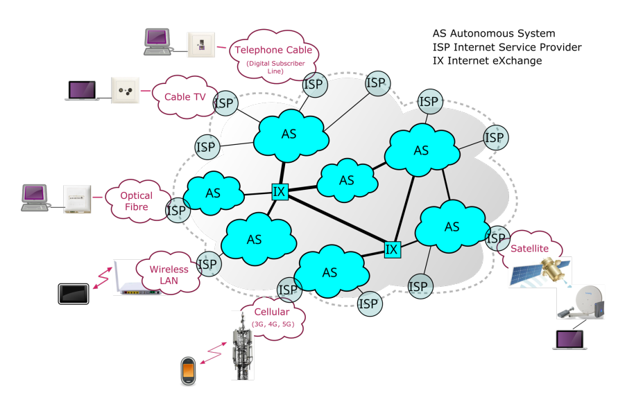
10.1.1 GARR
GARR (Gruppo per l’Armonizzazione delle Reti della Ricerca): rete in fibra ottica dedicata alla comunità italiana dell’università e della ricerca.
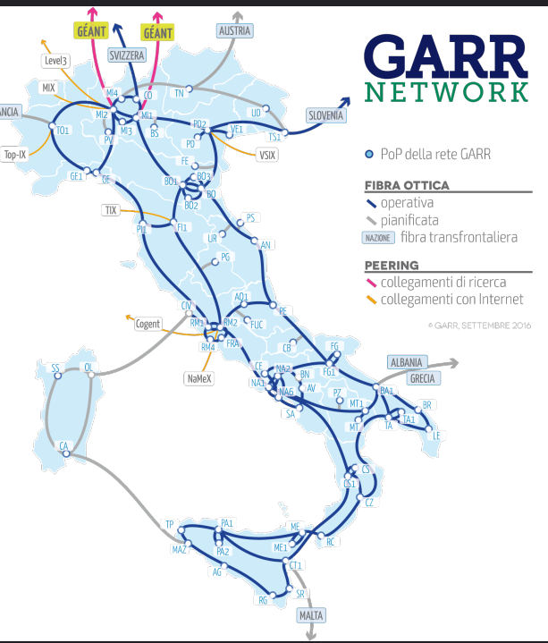
10.1.2 Stack ISO/OSI
- Application Layer
- Presentation Layer
- Session Layer
- Network Layer
- Transport Layer
- Data Link Layer
- Physical Layer
Ad ogni nodo è assegnato un indirizzo IP:
- IPv4: formato da 32bit
- IPv6: formato da 128bit
Grazie agli indirizzi IP è possibile identificare un computer sulla rete ed inviargli dati
- tipicamente ci si riferisce agli host remoti con nomi simbolici, es www.unina.it
- la traduzione nome/indirizzo è realizzata dal DNS (Domain Name Service)
I dati end-to-end trasmessi in pacchetti (IP datagram)
- la cui dimensione massima è di
64KB
IP è un servizio best-effort: i pacchetti potrebbero giungere a destinazione corrotti, duplicati, non-in-ordine o anche essere persi.
10.2 TCP e UDP
TCP (Transmission Control Protocol) implementa un trasporto affidabile da sorgente a destinazione su IP.
- Fornisce un flusso di byte, full-duplex
- Orientato alla connessione:
- instaurazione, utilizzo e chiusura di una connessione sono gestiti dal protocollo
- Preserva l’ordine, eliminando duplicati
- Implementa la ri-trasmissione dei pacchetti
NOTA: il livello IP è Best-effort.
UDP (User Datagram Protocol):
- Protocollo di trasporto non affidabile
- Molto simile al protocollo IP, ma offre la capacità di distinguere tra porte differenti nello stesso host → multiplexing
- Basato sul concetto di datagramma
10.3 Socket
È il primo approccio ai middleware, tramite queste possiamo realizzare un middleware.
Meccanismo di comunicazione tra processi
- eventualmente distribuiti su macchine differenti
- basato sulla rete
Una socket fornisce ai processi un meccanismo per l’accesso alla rete.
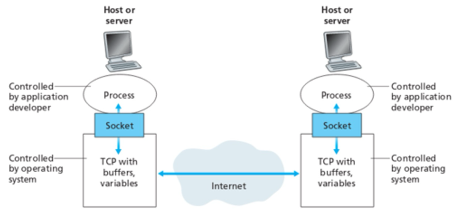
- È nata con il sistema operativo Unix 4.2 BSD(Berkeley Software Distribution), rilasciato nel 1983.
- Una socket è caratterizzata da indirizzo IP e numero di Porto del nodo.
- Possono essere di tipo TCP e UDP.
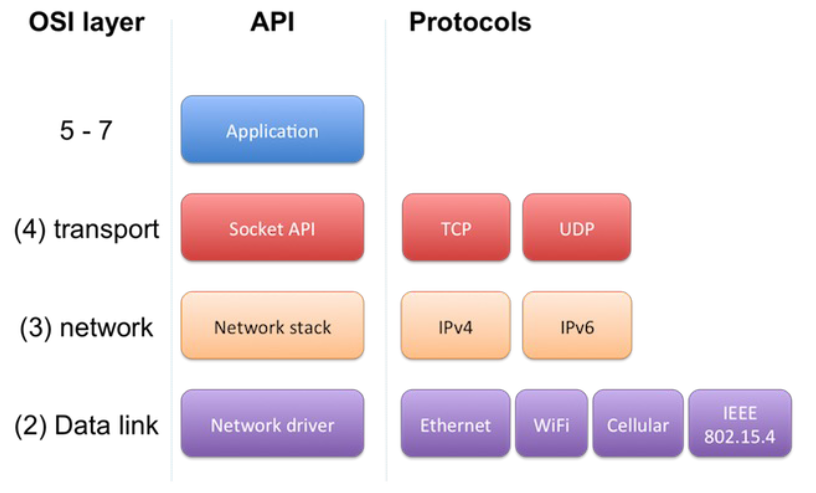
Esistono porte standard (Well-Known Ports) associate a servizi specifici. Quando utilizziamo un servizio standard, non è necessario specificare manualmente la porta perché il software client utilizza quella di default (ad esempio, il browser usa la 443 per l’HTTPS), richiedendo all’utente solo l’indirizzo IP o il nome host.
Tuttavia, l’uso delle porte standard non è obbligatorio: è possibile configurare un servizio su una porta personalizzata, ma in quel caso il client dovrà conoscere e specificare esplicitamente tale porta per stabilire la connessione.
10.4 Socket in Python
Per creare una socket si utilizza la funzione socket.socket() inclusa nel modulo socket.
import socket
s = socket.socket(socket_family, socket_type)socket_family: è la tipologia di indirizzo con cui si intende lavorare:socket.AF_INET: IPv4 (default)- sono supportate altre famiglie di socket:
AF_INET6(IPv6)AF_UNIX, utilizza Unix Domain Sockets (UDS) ed è utilizzata per la comunicazione locale tra processi sulla stessa macchina utilizzando percorsi del filesystem anzichè IP.AF_CAN, per i connettori CAN (controller Area Network). Il protocollo CAN è comunemente utilizzato nei settori automobilistico, industriale e nei sistemi embedded.AF_PACKET, un’interfaccia di pacchetti, specifica per Linux, di basso livello. Consente di lavorare direttamente con pacchetti grezzi a link layer, al di sotto delle normali socket IP → sicuramente utilizzata per costruire WireShark.AF_RDS, utilizzato per socket datagram affidabili. Un protocollo orientato ai messaggi progettato per la comunicazione ad alte prestazioni, in particolare in alcuni ambienti Linux in cluster e correlati a Oracle.
socket_type: è la tipologia di socket che vogliamo creareSOCK_STREAM: TCPSOCK_DGRAM: UDPSOCK_RAW: permette di saltare la gestione automatica del sistema operativo. Permette di gestire direttamente le intestazioni dei pacchetti. Mentre TCP e UDP consegnano solo il “carico utile”, una socket RAW permette di vedere l’intero pacchetto che viaggia sul cavo.pingè un’utility che si basa sull’utilizzo di socket RAW poiché utilizza un protocollo di trasporto ICMP.
10.4.1 Principali funzioni socket
Tutte le funzioni definite nel modulo socket sono dei wrapper alle syscall associate alla particolare implementazione del SO in uso.
Ad esempio, in Linux sono implementate le socket Berkely, quindi ad ogni Python API corrisponde la syscall associata.
socket(): crea una nuova socket- questa in Linux viene astratta come un file, le cui operazioni di scrittura e lettura sono gestite dal driver della scheda di rete.
bind(address): binding della socket con addressaddressè la tupla(IP, Porto).Nota che se porto è pari a zero il SO fornisce il primo porto libero
Inoltre se si utilizza
0.0.0.0come indirizzo IP stiamo dicendo che tale socket può ricevere dei messaggi, quindi è legata a qualsiasi interfaccia di rete disponibile sul PC.
listen(backlog): si mette in ascolto di connessioni verso la socket (Utilizzata per TCP)backlogspecifica il numero massimo di connessioni ammesse in coda-Di default tale valore è pari a
socket.SOMAXCONN, si tratta di una costante del sistema operativo che rappresenta il numero massimo di connessioni pendenti che il kernel può accodare.Se inseriamo un valore maggiore di
socket.SOMAXCONN, il sistema operativo, dopo il controllo, imposterà il valore asocket.SOMAXCONN.In Linux è possibile verificare tale valore attraverso una ricerca nel filesystem:
❯ cat /proc/sys/net/core/somaxconn 4096
accept(): accetta una connessione- Da invocare dopo
bind()elisten() - Restituisce la coppia
(conn, addr)connè una nuova socket utilizzabile per inviare/ricevere datiaddrè l’indirizzo associato alla socket dall’altro capo della connessione
- Da invocare dopo
connect(address): apre una connessione verso l’indirizzoaddressaddressè una tupla(IP, Porto)
close(): chiude la socket
Tutte queste funzioni sono quelle utilizzate nella macchina a stati finiti TCP per passare da uno stato all’altro. Infatti per arrivare ad ottenere una socket pronta all’utilizzo devono essere chiamate una serie di queste funzioni in modo preliminare con un certo ordine.
10.5 IP con funzioni particolari
- localhost
- un nome che si risolve in
127.0.0.1(IPv4) o::1(IPv6) - utilizzato per riferirsi alla macchina locale
- quando si effettua il binding, il server accetta solo connessioni dalla stessa macchina
- rappresenta un’interfaccia virtuale
- un nome che si risolve in
127.0.0.1- un indirizzo IP specifico nell’intervallo di
loopback - equivale a
localhost, ma utilizza esplicitamente IPv4 - assicura che la comunicazione rimanga all’interno della stessa macchina
- nodi esterni non possono collegarsi a questo indirizzo
- un indirizzo IP specifico nell’intervallo di
0.0.0.0- un indirizzo wildcard che significa “tutte le interfacce di rete disponibili”
- se usato in
socket.bind(), il server si mette in ascolto su tutte le interfacce (sia locali che esterne) - accetta connessioni da altri computer della rete
- non funziona con
socket.connect()
10.6 Utility di rete in Linux
Elenco delle interfacce di rete disponibili sul sistema ip a:
❯ ip a
1: lo: <LOOPBACK,UP,LOWER_UP> mtu 65536 qdisc noqueue state UNKNOWN group default qlen 1000
link/loopback 00:00:00:00:00:00 brd 00:00:00:00:00:00
inet 127.0.0.1/8 scope host lo
valid_lft forever preferred_lft forever
inet6 ::1/128 scope host noprefixroute
valid_lft forever preferred_lft forever
2: wlp89s0: <BROADCAST,MULTICAST,UP,LOWER_UP> mtu 1500 qdisc noqueue state UP group default qlen 1000
link/ether a1:b2:c3:d4:e5:f6 brd ff:ff:ff:ff:ff:ff permaddr x1:y2:z3:j4:k5:l6
altname wlx60e32bd2d421
inet 192.168.1.150/24 brd 192.168.1.255 scope global dynamic noprefixroute wlp89s0
valid_lft 20300sec preferred_lft 20300sec
inet6 fe80::a00:27ff:fe4e:66a1/64 scope link noprefixroute
valid_lft forever preferred_lft foreverPer conoscere lo stato attuale IP:PORTO utilizzati nel sistema, netstat -tulpn:
❯ netstat -tulpn
(Not all processes could be identified, non-owned process info
will not be shown, you would have to be root to see it all.)
Active Internet connections (only servers)
Proto Recv-Q Send-Q Local Address Foreign Address State PID/Program name
tcp 0 0 10.11.12.13:36448 0.0.0.0:* LISTEN -
tcp 0 0 127.0.0.53:53 0.0.0.0:* LISTEN -
tcp 0 0 127.0.0.54:53 0.0.0.0:* LISTEN -
tcp 0 0 127.0.0.1:23625 0.0.0.0:* LISTEN 7573/exe
tcp 0 0 0.0.0.0:22 0.0.0.0:* LISTEN -
tcp 0 0 127.0.0.1:44167 0.0.0.0:* LISTEN 8401/code
tcp 0 0 127.0.0.1:631 0.0.0.0:* LISTEN -
tcp 0 0 0.0.0.0:5355 0.0.0.0:* LISTEN -
tcp6 0 0 :::22 :::* LISTEN -
tcp6 0 0 fd00:cafe:face::1:99999 :::* LISTEN -
tcp6 0 0 ::1:631 :::* LISTEN -
tcp6 0 0 :::5355 :::* LISTEN -
udp 0 0 0.0.0.0:53737 0.0.0.0:* 8554/python3
udp 0 0 0.0.0.0:5353 0.0.0.0:* -
udp 0 0 0.0.0.0:5355 0.0.0.0:* -
udp 0 0 127.0.0.54:53 0.0.0.0:* -
udp 0 0 127.0.0.53:53 0.0.0.0:* -Nota: del comando
ip aenetstat -tulpnalcune informazioni sono censurate/vero-simili. Il motivo è che sono dati sensibili e non conviene pubblicarli in rete.
Per inviare uno i più pacchetti ICMP per raggiungere un dispositivo di rete, ping:
❯ ping -i 0.1 google.com -c 10
PING google.com (172.217.168.142) 56(84) bytes of data.
64 bytes from tzmila-af-in-f14.1e100.net (172.217.168.142): icmp_seq=1 ttl=114 time=41.7 ms
64 bytes from tzmila-af-in-f14.1e100.net (172.217.168.142): icmp_seq=2 ttl=114 time=20.1 ms
64 bytes from tzmila-af-in-f14.1e100.net (172.217.168.142): icmp_seq=3 ttl=114 time=20.2 ms
64 bytes from tzmila-af-in-f14.1e100.net (172.217.168.142): icmp_seq=4 ttl=114 time=20.1 ms
64 bytes from tzmila-af-in-f14.1e100.net (172.217.168.142): icmp_seq=5 ttl=114 time=20.8 ms
64 bytes from tzmila-af-in-f14.1e100.net (172.217.168.142): icmp_seq=6 ttl=114 time=21.4 ms
64 bytes from tzmila-af-in-f14.1e100.net (172.217.168.142): icmp_seq=7 ttl=114 time=20.3 ms
64 bytes from tzmila-af-in-f14.1e100.net (172.217.168.142): icmp_seq=8 ttl=114 time=20.6 ms
64 bytes from tzmila-af-in-f14.1e100.net (172.217.168.142): icmp_seq=9 ttl=114 time=20.4 ms
64 bytes from tzmila-af-in-f14.1e100.net (172.217.168.142): icmp_seq=10 ttl=114 time=22.2 ms
--- google.com ping statistics ---
10 packets transmitted, 10 received, 0% packet loss, time 907ms
rtt min/avg/max/mdev = 20.053/22.769/41.694/6.339 ms10.7 Scambio di dati su socket (TCP)
TCP:
send(string): invia dati tramite una socket- la socket deve essere connessa ad una socket remota
recv(bufsize): riceve i dati dalla socket- il valore di ritorno è una stringa
- bufsize è la massima quantità di dati che può essere ricevuta
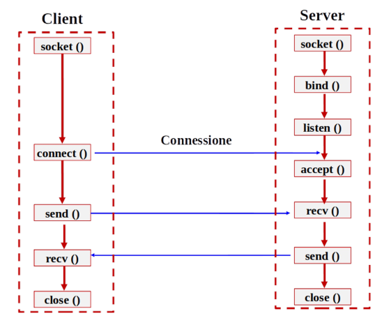
Implementazione Server TCP:
Implementazione client TCP
import socket, sys
def client(PORT):
IP = 'localhost'
BUFFER_SIZE = 1024
MESSAGE = "Hello, World!\n"
s = socket.socket(socket.AF_INET, socket.SOCK_STREAM)
s.connect((IP, PORT))
s.send(MESSAGE.encode("utf-8"))
data = s.recv(BUFFER_SIZE)
print ("received data: " + data.decode("utf-8"))
s.close()
if __name__ == "__main__":
try:
PORT = sys.argv[1]
except IndexError:
print("Please, specify PORT arg...")
assert PORT != "", 'specify port'
client(int(PORT))10.8 Cosa accade nel SO:
Usando strace possiamo conoscere le syscall reali che il kernel esegue nel momento in cui eseguiamo il codice python.
...
socket(AF_INET, SOCK_STREAM|SOCK_CLOEXEC, IPPROTO_IP) = 3
bind(3, {sa_family=AF_INET, sin_port=htons(0), sin_addr=inet_addr("0.0.0.0")}, 16) = 0
listen(3, 128) = 0
getsockname(3, {sa_family=AF_INET, sin_port=htons(51197), sin_addr=inet_addr("0.0.0.0")}, [16]) = 0
write(1, "Server is listening on 0.0.0.0:5"..., 37Server is listening on 0.0.0.0:51197
) = 37
accept4(3, 0x7ffede60a5e0, [16], SOCK_CLOEXEC) = ? ERESTARTSYS (To be restarted if SA_RESTART is set)
--- SIGWINCH {si_signo=SIGWINCH, si_code=SI_KERNEL} ---
accept4(3, {sa_family=AF_INET, sin_port=htons(34086), sin_addr=inet_addr("127.0.0.1")}, [16], SOCK_CLOEXEC) = 4
getsockname(4, {sa_family=AF_INET, sin_port=htons(51197), sin_addr=inet_addr("127.0.0.1")}, [128 => 16]) = 0
write(1, "Client address ('127.0.0.1', 340"..., 36Client address ('127.0.0.1', 34086)
) = 36
recvfrom(4, "Ciao sono il client...", 1024, 0, NULL, NULL) = 22
write(1, "received data from client: Ciao "..., 50received data from client: Ciao sono il client...
) = 50
sendto(4, "ciao sono il server...", 22, 0, NULL, 0) = 22
close(4)socket(...) = 3→ il kernel crea la socket e restituisce il file descriptor3(0,1e2sono già occupati dastdin,stdoutestderr)bind(3, ...port 0...) = 0→ lega la socket a una porta (inizialmente0, poi il kernel assegna la51197)listen(3, 128) = 0→ mette la socket in ascolto conbacklog = 128(valore di default su Linux)accept4(3, ...port 34086...) = 4→ arriva un client,acceptrestituisce una nuova socket confd = 4dedicata a quel client (si è stabilizzata una connessione)recvfrom(4, ...)sendto(4, ....)→ la comunicazione avviene sulla socket4, non sulla3.close(4)→ chiude solo la connessione con quel client, la socket3rimane in ascolto
Sfruttando lo pseudo filesytem possiamo vedere quali siano tutti i file descriptor aperti dal processo server, avente PID: 28293.
Proprio come una qualsiasi altra risorsa, in Linux, viene astratta come un file, quindi ci troveremo all’interno della cartella proc in corrispondenza del pid del nostro processo server un file che corrisponde ad un link alla socket che il server sta utilizzando.
fd è la cartella contenente tutti i file descriptor di un processo.
❯ ls -l /proc/28293/fd
total 0
lrwx------. 1 giobpc giobpc 64 Apr 17 21:50 0 -> /dev/pts/0
lrwx------. 1 giobpc giobpc 64 Apr 17 21:50 1 -> /dev/pts/0
lrwx------. 1 giobpc giobpc 64 Apr 17 21:50 2 -> /dev/pts/0
lrwx------. 1 giobpc giobpc 64 Apr 17 21:50 3 -> 'socket:[173838]'Il fatto che il file descriptor punti a socket:[173838] ci informa che questo fd non è un file su disco, ma una socket. È il modo in cui Linux rappresenta le socket nello pseudo filesystem /proc
Il numero 173838 è l’inode della socket. Ogni risorsa nel kernel ha un inode identificativo. Questo numero permette di collegare il file descriptor alla riga corrispondente in /proc/net/tcp, dove si trovano tutti i dettagli di quella socket: indirizzo, porta, stato (LISTEN), ecc.
Infatti andiamo a vedere tutte queste informazioni sulla socket del nostro server:
❯ grep "173838" /proc/net/tcp
3: 00000000:977B 00000000:0000 0A 00000000:00000000 00:00000000 00000000 1000 0 173838 1 000000000780448f 100 0 0 10 000000000:977B→ indirizzo e porto in ascolto;È in ascolto su tutte le interfacce di rete disponibili alla porta
38779.00000000:0000→ peer remoto: al momento non è presente nessuna connessione con un client.0A→ stato:LISTEN173838→ Inode
10.9 Scambio dati su socket (UDP)
UDP: - sendto(string, address): invia dati alla socket - la socket non deve essere connessa ad una socket remota, dato che la destinazione è specificata da address - recvfrom(bufsize): riceve i dati dalla socket - il valore di ritorno è una coppia (string, address) - string è una stringa contenente i dati ricevuti - address è l’indirizzo della socket che invia i dati - bufsize è la massima quantità di dati che possono esser ricevuti.
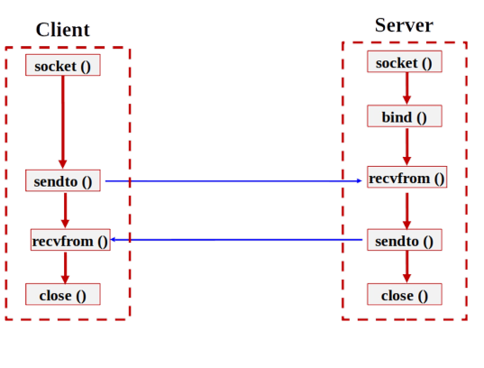
Implementazione server UDP:
import socket
msgServer = "Ciao client!"
serverAddressPort = ("localhost".encode("utf-8"), 7000)
bufferSize = 1024
s = socket.socket(family=socket.AF_INET, type=socket.SOCK_DGRAM)
s.bind(serverAddressPort)
msgClient, addr = s.recvfrom(bufferSize)
print("[Server]: Messaggio ricevuto: " +
msgClient.decode("utf-8"))
print("[Server]: Indirizzo client: {}" .format(addr))
print ("[Server]: Invio dati al client")
s.sendto(msgServer.encode("utf-8"), addr)
s.close()Implementazione client UDP:
import socket, sys
def client(port):
msgClient = "Ciao server!"
serverAddressPort = ("localhost".encode("utf-8"), port)
bufferSize = 1024
s = socket.socket(family=socket.AF_INET, type=socket.SOCK_DGRAM)
print ("[Client]: Invio dati al server. msg: ", msgClient)
s.sendto(msgClient.encode("utf-8"), serverAddressPort)
msgServer, addr = s.recvfrom(bufferSize)
print("[Client]: Risposta server: " + msgServer.decode("utf-8"))
s.close()
if __name__ == "__main__":
try:
port = sys.argv[1]
except IndexError:
print("Please, specify PORT arg...")
assert port != "", 'specify port'
client(int(port))10.9.1 Numero di socket utilizzate in TCP e UDP
- Per una comunicazione TCP
- socket server-side per il listening
- socket server-side per la comunicazione effettiva (ottenuto da
accept()) - socket client-side (quella ottenuta dalla
connect())
- Per la comunicazione UDP
- socket server-side per la comunicazione server verso client
- socket client-side per la comunicazione client verso il server
10.10 Server Multithread/Multiprocess
Migliorano l’efficienza di un server (TCP/UDP) creando più thread/process per gestire le richieste.
Socket come oggetto non è thread/process-safety, quindi è necessario adottare dei modelli di utilizzo delle socket oppure gestire esplicitamente la concorrenza.
I modelli di programmazione più utilizzati sono:
- TCP
- il thread principale gestisce la socket di ascolto (su cui fa
listen()) accept()crea un nuovo oggetto socket (la socket di connessione) che viene passata ad un solo nuovo thread/processo. Questa socket non deve essere condivisa dunque da più thread o processi, a meno che non si voglia gestire la concorrenza- il thread/process esegue
recv(),send(), quindiclose()sulla socket di connessione
- il thread principale gestisce la socket di ascolto (su cui fa
- UDP
- di solito c’è una sola socket server e ogni richiesta arriva sotto forma di datagramma con un indirizzo mittente
- questa socket è unica e viene condivisa da tutti i thread/process nel server
- quando arriva un datagramma, si avvia un thread o processo a cui gli vengono passati i dati ricevuti, l’indirizzo del client e la socket condivisa a quel thread.
- il thread elabora SOLO i dati e risponde con una
sendto()
10.10.1 thread safety delle socket
sendto() su UDP è in realtà abbastanza sicura tra thread, il motivo della non safety consiste:
UDP opera con datagrammi atomici. Una singola chiamata sendto() invia un pacchetto intero in un’unica operazione a livello kernel. Il sistema operativo gestisce questa operazione atomicamente, quindi due thread che chiamano sendto() contemporaneamente non “mischiano” i loro dati, al massimo i pacchetti vengono serializzati dal kernel.
Se il datagramma UDP supera la dimensione massima consentita
64KBil sistema operativo solleva un eccezione che porta alla terminazione del programma se non gestita.Quindi questo significa che l’operazione di
sendto()è sempre atomica, se possibile, altrimenti genera un’eccezione del tipoOSError: message too long.
Questa è la grande differenza rispetto TCP, dove send() può inviare dati in modo frammentato e quindi due thread in race condition potrebbero interlacciare i loro byte nel flusso.
Il motivo per cui si dice che la socket non è thread-safety non è il sendto(), ma l’oggetto socket in sé. L’oggetto socket ha stato interno (file descriptor, buffer, opzioni) e le operazioni che modificiano questo stato - come setsockopt(), bind(), close() - non sono protette. Se un thread chiude la socket mentre un altro sta facendo sendto() → RACE CONDITION.
10.10.1.1 TCP server multithread/multiprocess TCP
Multithread:
import socket
import threading
... # Thread function
def thd_fun(c):
# data received from client
data = c.recv(1024)
# reverse the given string from client
data = data[::-1]
# send back reversed string to client
c.send(data)
# connection closed
c.close()
if __name__ == '__main__':
host = ""
port = 12345
# create and bind a TCP socket
s = socket.socket(socket.AF_INET, socket.SOCK_STREAM)
s.bind((host, port))
print("Socket binded to port", port)
s.listen(5)
print("Socket is listening")
try:
while True:
# establish a connection with client
c, addr = s.accept()
print('Connected to :', addr[0], ':', addr[1])
# start a new thread
t = threading.Thread(target=thd_fun, args=(c,))
t.start()
except:
s.close()Multiprocess:
import socket
import multiprocess as mp
... # Process function
def proc_fun(c):
# data received from client
data = c.recv(1024)
# reverse the given string from client
data = data[::-1]
# send back reversed string to client
c.send(data)
# connection closed
c.close()
if __name__ == '__main__':
host = ""
port = 12345
# create and bind a TCP socket
s = socket.socket(socket.AF_INET, socket.SOCK_STREAM)
s.bind((host, port))
print("Socket binded to port", port)
s.listen(5)
print("Socket is listening")
try:
while True:
# establish a connection with client
c, addr = s.accept()
print('Connected to :', addr[0], ':', addr[1])
# start a new process
p = mp.Process(target=proc_fun, args=(c,))
p.start()
except:
s.close()10.10.1.2 UDP Server multithread/multiprocess
Nel contesto di un server UDP multithread/multiprocess ricordarsi che UDP è connectionless.
Questo significa che la ricezione di un datagramma è consigliata non farla nel contesto di un thread/processo figlio, proprio perché non c’è il concetto di connessione dedicata con il singolo client.
import socket
import threading
def thd_fun(s, data, addr):
# reverse the received bytes
data = data[::-1]
# send reply to that client
s.sendto(data, addr)
if __name__ == '__main__':
host = "0.0.0.0"
cur_port = 0
buffer_size = 1024
s = socket.socket(socket.AF_INET, socket.SOCK_DGRAM)
s.bind((host, cur_port))
cur_port = s.getsockname()[1]
print("UDP socket binded to port", cur_port)
try:
while True:
data, addr = s.recvfrom(buffer_size)
print("Received from:", addr, "data:", data.decode("utf-8", errors="ignore"))
t = threading.Thread(target=thd_fun, args=(s, data, addr), daemon=True)
t.start()
except:
s.close()Serie di comandi utili per verificare le performance della comunicazione attraverso socket:
emulazione network delay in un sistema Linux
sudo apt update && sudo apt install iproute2 -y || sudo dnf update && sudo dnf install iproute2 -yadd delay on loopback
sudo tc qdisc add dev lo root netem delay 1000msadd corruption of 10% of traffic on loopback
sudo tc qdisc add dev lo root netem corrupt 10%add drop of 20% of traffic on loopback
sudo tc qdisc add dev lo root netem drop 10%remove delay on loopback
sudo tc qdisc del dev lo rootlist tc rules
sudo tc qdisc show
10.11 Applicazioni client-server con socket
In un’applicazione con comunicazione basata su socket, client e server prevedono meccanismi di:
- comunicazione
- esternalizzazione dei dati
- invio-ricezione delle richieste
- ricostruzione dei valori ricevuti
Potenziali rischi:
- L’implementazione dei meccanismi di comunicazione “distrae” dalla realizzazione delle funzionalità effettive dell’applicazione
- Sovrapposizione della logica di comunicazione client-server con la logica applicativo (di business)
Il programmatore lato client dovrebbe concentrarsi sulla logica applicativa (invocando i servizi del server specificati da un’interfaccia), e separare la logica applicativa dai meccanismi di comunicazione/interazione con il server.
Analogamente, il programmatore lato server dovrebbe concentrarsi sulla codifica dei servizi offerti, separandoli dai meccanismi di comunicazione/interazione con il client.
10.12 Patter Proxy-Skeleton
Pattern: è una soluzione riutilizzabile a un problema ricorrente nel design del software. Non è codice copiabile ma un modello concettuale - una ricetta che descrive come strutturare classi e oggetti per risolvere un problema specifico in modo elegante e collaudato.
Il pattern Proxy-Skeleton è un pattern strutturale usato tipicamente nei sistemi distribuiti. È composto da due componenti complementari:
Proxy (lato client):
È un oggetto locale che finge di essere l’oggetto remoto. Funge da intermediario con il server.
- Riceve la chiamata
- Serializza i parametri (marshalling)
- Li invia via rete al server
- Aspetta la risposta e la restituisce al chiamante (client)
Skeleton (lato server)
È il “gemello” del proxy sul lato server. Esso:
- Riceve i dati dalla rete
- Deserializza i parametri (unmarshalling)
- Chiama il metodo reale sull’oggetto server
- Rimanda il risultato alla proxy via rete
L’obiettivo del pattern è nascondere completamente la complessità della comunicazione remota tra client e server.
Il proxy si presenta come un’implementazione del servizio remoto, locale al client.
I meccanismi di “basso livello” necessari per l’instaurazione della comunicazione, e per l’invio-ricezione dei parametri delle invocazioni tramite TCP e UDP, sono implementati e incapsulati all’interno del Proxy e dello Skeleton.
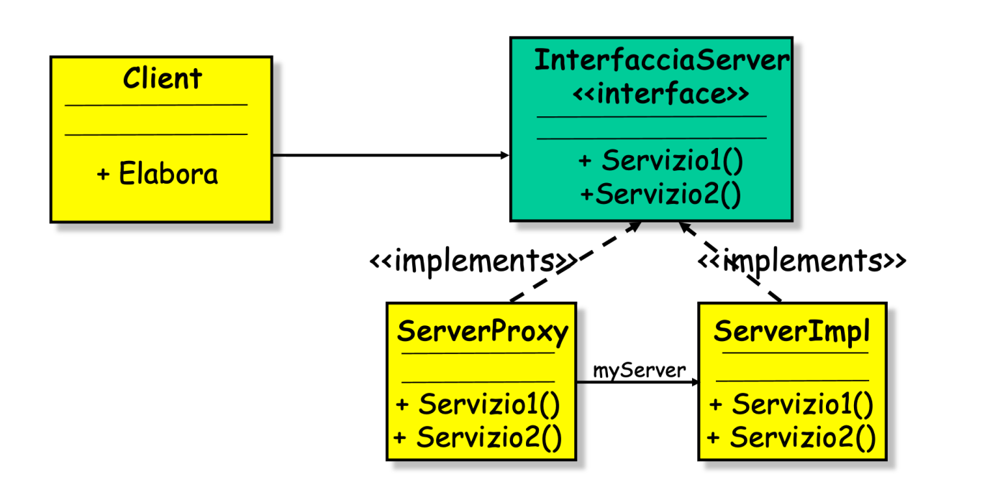
- Il servizio fornito è specificato da
interfacciaServer. - È presente una duplice implementazione,
ServerProxyeServerProxyServerImplimplementa effettivamente i servizi dichiarati nell’interfaccia;ServerProxysi fa carico dell’inoltro delle richieste (effettuate dal client) verso il alto server.
- L’associazione direzionale tra
ServerProxyeServerProxysintetizza tutti i meccanismi necessari al proxy per riferirsi al server.
10.12.1 Utilizzo del pattern Proxy-Skeleton
Il client possiede un riferimento ad un oggetto di tipo interfacciaServer (ossia server proxy).
Il client utilizza il proxy in sostituzione del servizio reale; il proxy si fa carico dell’interazione con il lato server.
In maniera complementare lo Skeleton si fa carico di implementare la comunicazione lato server, quindi si finge il client per ricevere il servizio e inviare il risultato verso la proxy sempre via rete.
Anche lo Skeleton si fa carico dell’interazione con il lato client.
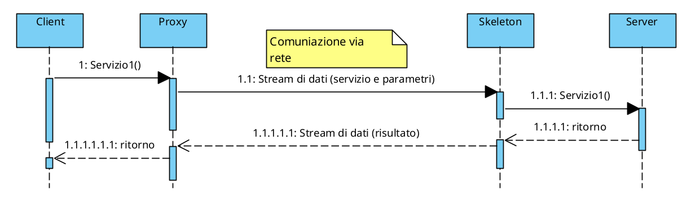
10.12.2 Ruolo dello skeleton
Con l’aggiunta del Proxy il client è sollevato dalle problematiche di comunicazione.
In maniera analoga un proxy lato server, detto Skeleton, si fa carico della comunicazione con il Proxy lato client.
Lo Skeleton:
- riceve le richieste di servizio
- struttura l’informazione fornita in ingresso tramite socket TCP o UDP
- effettua l’up-call al servizio reale
- riceve da questo eventuali risultati
- inva una risposta al proxy lato client
10.13 Schema concettuale
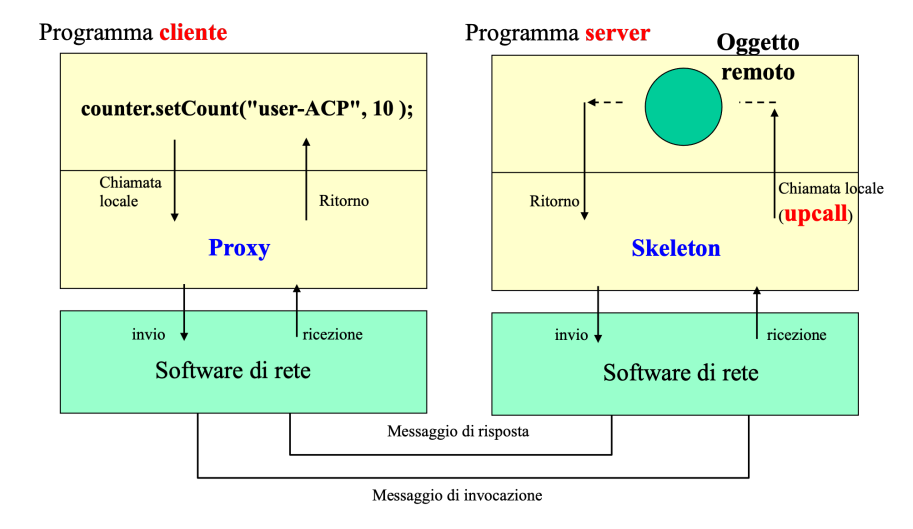
10.14 Implementazione della Proxy-Skeleton
L’approccio con cui andiamo ad implementare entrambe le proxy, lato cliente e lato server, sono gli stessi.
In pratica però, lato client il Proxy è quasi sempre implementato per composizione/delega, perché il client non ha motivo di “essere un” proxy - semplicemente lo usa per chiamare il server come se fosse in locale.
In particolar modo abbiamo due tipologie di approccio per l’implementazione.
10.14.1 Skeleton per ereditarietà (is-a)
L’idea è che lo Skeleton è una classe astratta che estende InterfacciaServer e gestisce tutta la comunicazione di rete, ma lascia i metodi del servizio senza implementazione (astratti). Il ServerImpl estende lo Skeleton e fornisce la logica reale.
Quindi lo skeleton implementa unicamente gli opportuni schemi di comunicazione, ma lascia senza implementazione i metodi dell’interfaccia InterfacciaServer.
ServerImpl è una sottoclasse (estende) di Skeleton e fornisce implementazione ai metodo astratti.
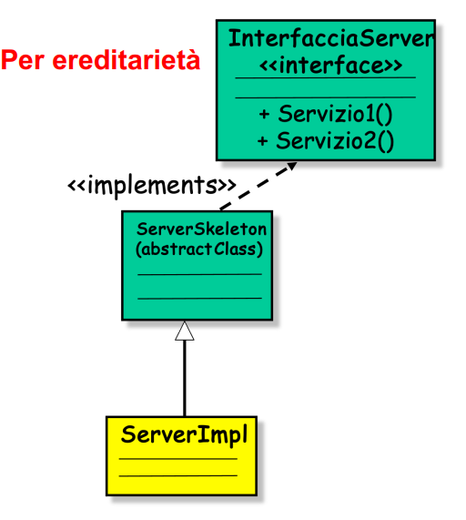
10.14.2 Skeleton per delega (has a)
Qui lo Skeleton non viene esteso, ma contiene un riferimento (delegate) a chi implementa l’interfaccia. Entrambe le classi implementano InterfacciaServer in modo indipendente.
I metodi dell’InterfacciaServer saranno implementati all’interno dello Skeleton in questo modo:
def servizio1(self):
self.delegate.servizio1()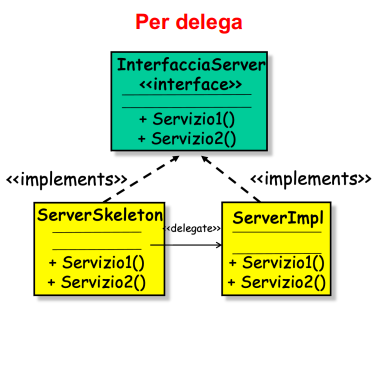
10.15 Ereditarietà vs Delega
È consigliato usare l’ereditarietà solo quando si è sicuri che la classe che stiamo creando (client/server) e quella da cui ereditiamo (Proxy/Skeleton) condividino tutti i tratti comuni.
Se si pensa che la propria classe non abbia bisogno di alcun attributo o metodi della superclasse e la relazione “is-a” non è applicabile, è meglio usare la delega.
Solitamente è meglio utilizzare l’approccio che consiste nella delega in virtù di un principio fondamentale della OOP:
“Favorisci la composizione (delega) rispetto all’ereditarietà” – GoF, Design Patters
Ma non è una regola assoluta.
Ereditarietà: pro e contro:
PRO
- Semplicità nell’implementazione: il programmatore del server deve solo estendere Skeleton e implementare i metodi astratti. Non deve occuparsi di creare istanze separate o passare riferimenti.
- L’up-call è automatico e pulito: il polimorfismo (Duck typing) fa tutto: quando lo Skeleton chiama
self.request(data), Python esegue automaticamente la versione diServerImpl. Non servono riferimenti espliciti. - Meno codice boilerplate: non devono essere implementati metodi “ponte” che semplicemente delegano la chiamata.
CONTRO
- Accoppiamento forte: se domani vuoi cambiare il protocollo di rete, devi modificare o sostituire la superclasse, e
ServerImplne risentirebbe. - Riuso limitato:
ServerImplnon può essere usato senza lo Skeleton. Se vuoi testare la logica applicativa isolata (senza rete), non puoi farlo facilmente perché la logica e la comunicazione sono fuse insieme.
L’obiettivo del pattern in questo caso è parzialmente o apparentemente ottenuto. Formalmente le responsabilità sembrano divise ma concretamente
ServerImplè strutturalmente dipendente dallo Skeleton.È come: “dividere la cucina dal salotto ma separarli da una porta che non si chiude”.
- Ereditarietà multipla rischiosa: in Python l’ereditarietà multipla è possibile ma delicata. Se
ServerImpldeve estendere un’altra classe, aggiungere ancheSkeletoncrea gerarchie complesse e potenzialmente il problema del “diamante mortale della morte”. - Violazione del principio di singola responsabilità (SRP):
ServerImplfinisce per avere due responsabilità: la logica applicativa e la comunicazione di rete. Questo rende la classe più difficile da manutenere.
- Accoppiamento forte: se domani vuoi cambiare il protocollo di rete, devi modificare o sostituire la superclasse, e
Quindi usa l’ereditarietà quando:
- il progetto è piccolo e semplice, e la semplicità vale più della flessibilità
- il protocollo di rete non cambierà mai
ServerImplnon deve estendere nessun’altra classe- minimo codice possibile per arrivare al risultato
Delega: pro e contro
PRO
- Separazione netta delle responsabilità:
ServerImplconosce solo la logica applicativa.Skeletonconosce solo la rete. Ognuno fa una cosa sola. - Testabilità: posso testare
ServerImplcompletamente senza rete. - Flessibilità: posso cambiare il protocollo senza toccare la logica di business.
- Riuso dell’implementazione
- Nessun problema con l’ereditarietà multipla
- Separazione netta delle responsabilità:
CONTRO
- Più codice.
- Più classi da gestire.
- Passaggio del riferimento: dobbiamo passare
delegatealloSkeletonal momento della creazione, il che aggiunge un piccolo overhead di configurazione.
Quindi usa la delega quando:
- il progetto è medio-grande e la manutenibilità conta
- vuoi poter testare la logica separatamente dalla rete
- il protocollo potrebbe cambiare in futuro
ServerImpldeve estendere altre classi- si lavora in un team, dove chi scrive la logica di business e che la logica di comunicazione sono persone diverse